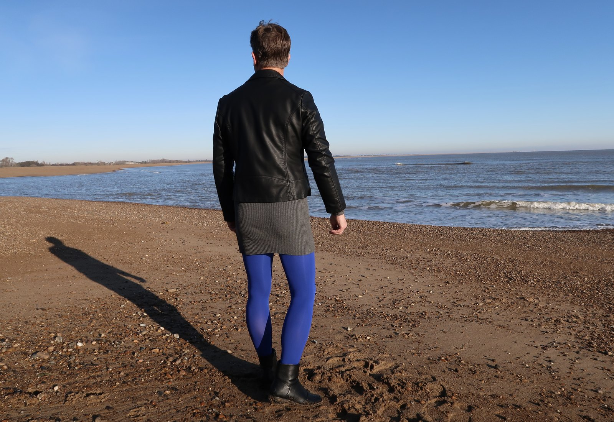

Тепло под одежду
Тонкий эластичный слой может быть удобен под брюками. Ищите гладкие швы, подходящую длину и состав по сезону.
Большой спецпроект
Колготки используют для тепла, танца, спорта, сцены, медицинских задач и самовыражения. Пол не отменяет правил хорошей посадки, но анатомия и назначение действительно важны.


Сценарии
Выбирайте изделие по функции. Плотность сама по себе не доказывает спортивные или медицинские свойства.
Тонкий эластичный слой может быть удобен под брюками. Ищите гладкие швы, подходящую длину и состав по сезону.
Здесь важны свобода движения, непрозрачность, оттенок и устойчивость к интенсивной нагрузке.
Спортивные тайтсы выбирают по влагоотведению и посадке. Обычные колготки не следует автоматически считать спортивной защитой.
Шорты, длинный верх и плотные колготки создают многослойный силуэт. Цвет и фактура зависят только от вашего вкуса.
Класс давления и размер подбирают по показаниям и меркам. Моделирующий верх не является медицинской компрессией.
Ношение одежды не требует оправдания. Допустимы практические, эстетические и интимные причины без стыда и давления на других.
Анатомия и размер
Универсального правила «всегда берите больше» нет. Сравнивайте свои мерки с таблицей конкретной модели и учитывайте конструкцию.
Влияет на длину ноги и верхней части. Недостаток длины создаёт избыточное натяжение полотна.
Пояс не должен врезаться, а верхняя часть не должна скатываться. При большой разнице объёмов ищите специальный крой.
Длина и ширина стопы важны для мыска. У специализированных мужских моделей могут быть отдельные параметры.
Анатомическая вставка или специальный мужской крой повышает комфорт. Проверяйте фактическое описание, а не только слово унисекс.
Процент эластана и плетение влияют на растяжение. Не оценивайте посадку исключительно по DEN.
Сядьте, наклонитесь и пройдите несколько шагов. Боль, онемение и сильное давление означают неподходящую посадку.
Специализированные марки
Отделяем действительно специализированные конструкции от общего слова унисекс. Если актуальные параметры не опубликованы, карточка это показывает.
Визуальный разбор
Фотографии иллюстрируют видимый крой и сценарий, а не назначают изображённой вещи конкретный бренд.
Балетная посадка должна выдерживать полный диапазон движения без складок и сдавливания.

Историческая реконструкция показывает, что плотные чулочные изделия давно были частью мужского костюма.
Кожаная куртка и яркие 100 den создают образ, который не требует гендерного оправдания.
Мифы и точность
Практическая польза не должна превращаться в медицинское или спортивное обещание без исследований.
Сам по себе эластичный слой не доказывает профилактику травм. Для спорта выбирайте специализированную экипировку и разумную нагрузку.
Нет. Избыточный размер сползает и собирается. Сравнивайте рост, вес, талию, бёдра и стопу с таблицей конкретной модели.
Плотность нити не измеряет давление. Медицинская компрессия указывается в mmHg или классом и требует правильных мерок.
Не обязательно. Ищите явное описание мужской передней части или специального исполнения у производителя.
Личные границы
Если колготки связаны с личным влечением, это не делает человека плохим. Важны совершеннолетие, добровольное согласие, приватность и право партнёра отказаться. Подробнее читайте в спокойном информационном разделе.
Открыть раздел для взрослых